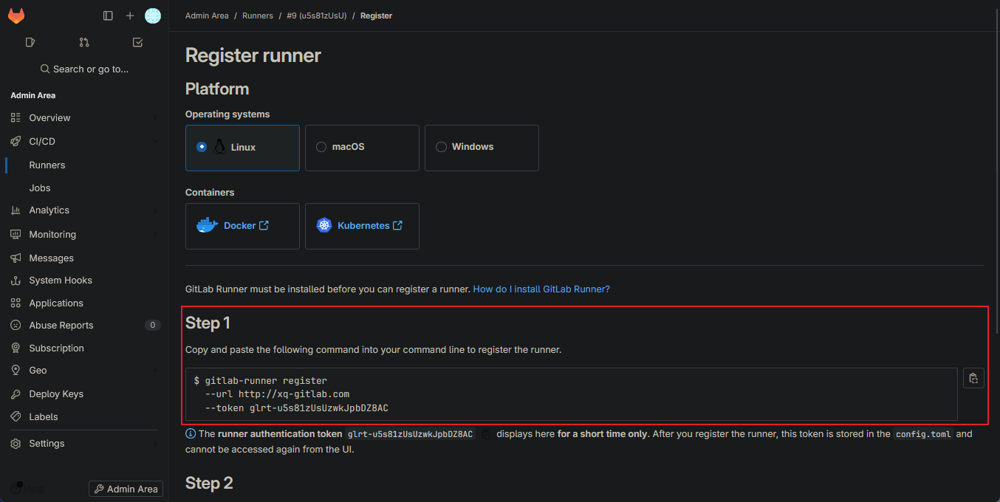

這邊會介紹如何使用 docker 安裝 gitlab_runner 並 register gitlab 上建立的 runner
裡面包含了一些 debug, 只能說 docker network 要人命QQ
Install
Pre-request
這邊 os 是 centos 9
Docker 安裝
Docker network
之後會找機會介紹
如果有錯誤請當沒看到 XD
這邊使用 docker compose taml file 來建立 docker
在 docker compose 建立情況下會為每一個 file 獨立建立 network, 一般直接 command 執行的話, 會共用在同一個 docker bridge
簡單說明下, 一般情況下 Docker 會建立一個預設 bridge 網路, 用來和外界溝通, 溝通的路徑為 container -> docker bridge -> localhost -> external
使用兩個獨立 compose yaml file 建立兩個 container, docker 分別會對兩個 container 建立兩個 bridge, 使用不同網段, 表示一般在這種情況下, 兩個 container 是無法做溝通的
比較簡易的做法就是一個 docker network, 然後在建立兩個 container 的時候, 在 compose yaml file 裡面指定使用同一段 network, 這樣就可以很簡單的讓兩個 container 可以互相溝通
在都不指定 network 情況下
-
CLI
-
Compose yaml file
-
同一個 file, 同一個 bridge (兩個 container 可互相溝通)
-
不同 file, 個別建立 bridge (兩個 container 無法互相溝通)
Create Docker Network
這邊先建立一個 docker network, 等等需要修改之前寫好的 gitlab 和 gitlab runner 的 compose file, 指定到 gitlab 這個 network
1
2
3
4
5
6
7
8
9
10
11
12
13
14
15
16
17
18
19
20
|
docker network ls
NETWORK ID NAME DRIVER SCOPE
97f000745c6c bridge bridge local
4fa42a266487 host host local
3e63fd5ecca6 none null local
---
docker network create gitlab
16dfdf4b7fcd9c4e17d2fb531481ad9b1fdcb20be691777b5fbb204b544dfd3c
docker network ls
NETWORK ID NAME DRIVER SCOPE
97f000745c6c bridge bridge local
16dfdf4b7fcd gitlab bridge local
4fa42a266487 host host local
3e63fd5ecca6 none null local
|
透過 ip a 可以看到多了一張虛擬網卡, 上方的 docker0 是預設定 docker bridge
gitlab subnet 是 172.30.0.1/16
Setting Mount Path
1
2
3
4
5
|
# 隨便想存哪就存哪
mkdir -p /opt/gitlab/gitlab_runner
# 設定環境變數, 等等 gitlab runner compose 檔案需要用到
export GITLAB_RUNNER_HOME=/opt/gitlab/gitlab_runner
|
Modify / Create compose file
Gitlab
1
2
3
4
5
6
7
8
9
10
11
12
13
14
15
16
17
18
19
20
21
22
23
24
25
26
27
|
services:
gitlab:
image: gitlab/gitlab-ee:17.0.2-ee.0
container_name: gitlab
restart: always
hostname: 'xq-gitlab.com' # 設定 container 的 hostname
environment:
GITLAB_OMNIBUS_CONFIG: |
# Add any other gitlab.rb configuration here, each on its own line
external_url 'http://xq-gitlab.com'
ports:
- '28080:80'
- '443:443'
- '2222:22'
volumes:
- '$GITLAB_HOME/config:/etc/gitlab'
- '$GITLAB_HOME/logs:/var/log/gitlab'
- '$GITLAB_HOME/data:/var/opt/gitlab'
shm_size: '1024m'
#extra_hosts: # 用來額外寫入container內的 /etc/hosts
# - "xq-gitlab.com:172.27.0.2"
networks: # 表示 container service 使用的 network 設定
- 'gitlab'
networks:
gitlab: # 為這個設定命名為 gitlab
name: gitlab # 指定使用名稱為 gitlab 的 network
external: true # 表示已經建立好, 不需要額外建立
|
Gitlab Runner
記得在選 image 的時候不要跟我一樣耍白癡選 bleeding, 那個表示還在開發中…
1
2
3
4
5
6
7
8
9
10
11
12
13
14
15
16
17
|
services:
gitlab-runner:
image: gitlab/gitlab-runner:latest
container_name: gitlab-runner
restart: always
volumes:
- '$GITLAB_RUNNER_HOME/:/etc/gitlab-runner'
- '/var/run/docker.sock:/var/run/docker.sock' # 讓 docker 內部可以使用 docker 指令, 不用額外安裝 docker
shm_size: '1024m'
#extra_hosts:
# - "xq-gitlab.com:172.27.0.2"
networks:
- 'gitlab'
networks:
gitlab:
name: gitlab
external: true
|
啟動
1
2
3
4
5
6
7
|
docker compose -f <compose_file.yaml> up -d
docker ps -a
CONTAINER ID IMAGE COMMAND CREATED STATUS PORTS NAMES
a3a9a1f43c73 gitlab/gitlab-runner:latest "/usr/bin/dumb-init …" About a minute ago Up About a minute gitlab-runner
460f2b182b3b gitlab/gitlab-ee:17.0.2-ee.0 "/assets/wrapper" 5 minutes ago Up 5 minutes (healthy) 0.0.0.0:443->443/tcp, :::443->443/tcp, 0.0.0.0:2222->22/tcp, :::2222->22/tcp, 0.0.0.0:28080->80/tcp, :::28080->80/tcp gitlab
|
檢查是否在 172.30.0.1/16 網段
1
2
3
4
5
|
docker inspect -f '{{range.NetworkSettings.Networks}}{{.IPAddress}}{{end}}' gitlab
172.30.0.2
docker inspect -f '{{range.NetworkSettings.Networks}}{{.IPAddress}}{{end}}' gitlab-runner
172.30.0.3
|
Create Runner
登入 Gilab 之後, 點選下方的 admin -> CI/CD -> New instance runner
恩!? 看沒有!? 那就請看圖片….
請忽略已經存在的…

這邊主要的設定是 Tags
Tags：表示說這個 runner 需要執行的 job, 可以用,分隔多個 tag
Run untagged jobs 打勾, 表示所有沒有 tag 的 job 都可以執行
Maximum job timeout：Runner在終止作業之前可以運行的最大時間(以秒為單位)
Runner的超時設置將優先於 job 的設定
請將 token 的資訊保留, 如果未註冊完就關閉, 就只能重新 create
1
|
gitlab-runner register --url http://xq-gitlab.com --token glrt-u5s81zUsUzwkJpbDZ8AC
|

這邊把舊的#8刪掉了, 舊的不去新的不來
可以看到 runner 已經來到 #9 看到我慘烈的測試

Registry Runner
1
2
3
4
5
6
7
8
9
10
11
12
13
14
15
16
17
18
19
20
21
|
# 連線進入 gitlab-runner container
docker exec -it gitlab-runner /bin/sh
gitlab-runner register
# Runtime platform arch=amd64 os=linux pid=46 revision=44feccdf version=17.0.0
# Running in system-mode.
# Enter the GitLab instance URL (for example, https://gitlab.com/):
http://xq-gitlab.com
# Enter the registration token:
glrt-u5s81zUsUzwkJpbDZ8AC
# Verifying runner... is valid runner=u5s81zUsU
# Enter a name for the runner. This is stored only in the local config.toml file:
[ce57232a8472]: demo
# Enter an executor: docker+machine, kubernetes, instance, shell, docker-windows, parallels, virtualbox, docker, docker-autoscaler, custom, ssh:
docker
# Enter the default Docker image (for example, ruby:2.7):
python:alpine
# Runner registered successfully. Feel free to start it, but if it's running already the config should be automatically reloaded!
# Configuration (with the authentication token) was saved in "/etc/gitlab-runner/config.toml"
|
這邊會產出 config.toml 這個檔案裡面會記錄所有註冊的資訊
這邊要多增加一個設定
[[runners]]..[runners.docker]在底下新增 network_mode = "gitlab"
1
2
3
4
5
6
7
8
9
10
11
12
13
14
15
16
17
18
19
20
21
22
23
24
25
26
27
28
29
30
31
32
|
concurrent = 1
check_interval = 0
shutdown_timeout = 0
[session_server]
session_timeout = 1800
[[runners]]
name = "demo"
url = "http://xq-gitlab.com"
id = 9
token = "glrt-u5s81zUsUzwkJpbDZ8AC"
token_obtained_at = 2024-06-21T16:32:24Z
token_expires_at = 0001-01-01T00:00:00Z
executor = "docker"
[runners.custom_build_dir]
[runners.cache]
MaxUploadedArchiveSize = 0
[runners.cache.s3]
[runners.cache.gcs]
[runners.cache.azure]
[runners.docker]
tls_verify = false
image = "python:alpine"
privileged = false
disable_entrypoint_overwrite = false
oom_kill_disable = false
disable_cache = false
volumes = ["/cache"]
shm_size = 0
network_mtu = 0
network_mode = "gitlab"
|
這意思是說在 gitlab runner 啟用的 docker 是和 gitlab, gitlab_runner 使用同一個網路
因為 gitlab runner 裡面的 docker 需要從本地 docker gitlab 裡面的 repo 拉取http://xq-gitlab.com/root/ci-cd-demo.git/
但是因為這是在 docker network 裡面才有辦法辨認, 因此需要指定 gitlab runner 啟用的 docker 使用相同的 network
要不然在跑 pipeline 會出現下面的這種Could not resolve host error(當初找半天找到要中風)
Test Runner
這邊做一個測試, 這篇比較單純為介紹如何 register runner, 只後如何操作會載另外整理
底下這個檔案是上傳到 gitlab repo 之後會自動執行的檔案, 檔案名稱是固定的
.gitlab-ci.yml
1
2
3
|
helloworld: # job name 什麼名稱都可以
script: # 底下表示要執行的指令
- echo "hello world, gitlab!" #要執行的動作
|
請忽略好幾個測試的…..搞半天XD
Ref
Gitlab runner docker Could not resolve host
Advanced configuration